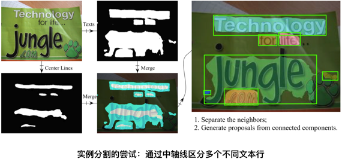

原文连接:https://www.cnblogs.com/amap_tech/p/12048062.html
一、前言
图像分割（Image Segmentation）是计算机视觉领域中的一项重要基础技术，是图像理解中的重要一环。图像分割是将数字图像细分为多个图像子区域的过程，通过简化或改变图像的表示形式，让图像能够更加容易被理解。更简单地说，图像分割就是为数字图像中的每一个像素附加标签，使得具有相同标签的像素具有某种共同的视觉特性。
图像分割技术自 60 年代数字图像处理诞生开始便有了研究，随着近年来深度学习研究的逐步深入，图像分割技术也随之有了巨大的发展。早期的图像分割算法不能很好地分割一些具有抽象语义的目标，比如文字、动物、行人、车辆。这是因为早期的图像分割算法基于简单的像素值或一些低层的特征，如边缘、纹理等，人工设计的一些描述很难准确描述这些语义，这一经典问题被称之为“语义鸿沟”。
得益于深度学习能够“自动学习特征”的这一特点，第三代图像分割很好地避免了人工设计特征带来的“语义鸿沟”，从最初只能基于像素值以及低层特征进行分割，到现在能够完成一些根据高层语义的分割需求。
（图像分割的发展历史）
高德地图拥有图像/视频大数据，在众多业务场景上都需要理解图像中的内容。例如，在数据的自动化生产中，通常需要寻找文字、路面、房屋、桥梁、指示牌、路面标线等目标。这些数据里有些是通过采集车辆或卫星拍摄，也有些数据则是通过用户手机拍摄，如下图所示：
面对这些场景语义复杂、内容差异巨大的图像，高德是如何通过图像分割对其进行理解的？本文介绍了图像分割在高德地图从解决一些小问题的“手段”，逐步成长为高度自动化数据生产线的强大技术助力。
二、探索期：一些早期的尝试
在街边的数据采集中，我们需要自动化生产出采集到的小区、店铺等 POI （Point of Interest）数据。我们通过 OCR 算法识别其中文字，但苦恼于无法确定采集图像中到底有几个 POI。例如，下图中“领秀丽人”与“燕子童装”两家店铺，人眼可以很容易区分，但是对于机器则不然。一些简单的策略，比如背景颜色，容易带来很多的错误。
例如，遇到两个样式十分相近的挂牌的时候，我们利用无监督的 gPb-owt-ucm 算法 [1] 在检测多级轮廓的基础上结合改进的分水岭算法将图像切分为多个区域，并利用 Cascade Boosting 的文字检测结果将图中带有文字的区域进行了分割。
三、成长期：自然场景下的语义分割
于 2014 年底问世的全卷积神经网络 [2]（FCNs, Fully Convolutional Networks）无疑是继 2012 年问鼎 ImageNet 大赛以来深度学习发展的又一里程碑。FCNs 提供了第一个端到端式的深度学习图像分割解决方案。FCNs 在 CNN 的基础上可以从任意尺寸的输入进行逐像素的分类。我们也在第一时间将其落地到高德自身的应用场景中，例如文字区域的分割。自然场景下的文字由于其背景、光照复杂，文字朝向、字体多样，使得人工构建特征十分困难。
很快地，我们发现 FCNs 还并不能很好地满足我们的需求。虽然 FCNs 在解决语义鸿沟问题上提供了解决方案，但在一般情况下只能给出一个“粗糙”的区域分割结果，不能实现很好的“实例分割”，对于目标虚警、目标粘连、目标多尺度、边缘精度等问题上也没有很好地解决。一个典型的例子就是在分割文字区域时，“挨得近”的文字区域特别容易粘在一起，导致在计算图像中的文本行数时造成计数错误。
因此，我们提出了一个多任务网络来实现自己的实例分割框架。针对目标粘连的问题，我们在原始网络中追加了一个分割任务，其目标是分割出每个文本行的“中轴线”，然后通过中轴线区域来拆分粘连的文本行区域。拆分的方法则是一个类似于 Dijkstra 的算法求解每个文本区域像素到区域内中轴线的距离，并以最短距离的中轴线作为像素归属。

另外一个比较困扰的问题是 FCNs 结果中的虚警，即非文字区域被分割为文字区域。虽然相较于一些传统方法，FCNs 结果中的虚警已经少了很多，但为了达到更好的分割正确率，我们在原有网络基础上增加了一个并行的 R-CNN 子网络进行文字的检测，并利用这些检测结果抑制虚警的产生（False Alarms Suppression）。
为了通过端到端的学习使得网络达到更好的效果，我们设计了一个一致性损失函数（Consistency Loss Function），来保证网络主干下分割子网络和检测子网络能够相互指导、调优。从优化后分割网络输出的能量图可以看到，虚警的概率明显降低了。若想要了解详细细节，可以参考我们 17 年公布在 arxiv 上的文章[3]。
四、成熟期：分割的精细化与实例化
得益于 Mask R-CNN 框架 [4] 的提出，实例化的图像分割变得更加容易。以之前提到的商户挂牌的分割为例，挂牌区域的分割也十分容易出现粘连，且挂牌样式多样，不存在文本行这样明显的“中轴线”。目标检测方法可以对提取挂牌的外包矩形。但问题在于，自然场景下挂牌的拍摄往往存在非垂直视角，因此在图像上并不是一个矩形，通常的检测算法则会带来不准确的边缘估计。Mask R-CNN 通过良好地整合检测与分割两个分支，实现了通用的实例化图像分割框架。其中目标检测分支通过 RPN 提取目标区域，并对其进行分类实现目标的实例化；然后在这些目标区域中进行分割，从而提取出精准的边缘。
一些更加复杂的场景理解需求，也对图像分割分割精细程度提出了更高的要求。这主要体现在两个方面：（1）边缘的准确度（2）不同尺度目标的召回能力。
在高精地图的数据数据生产需要分割出图像中的路面，然而高精地图对于精度的要求在厘米级，换算到图像上误差仅在 1~2 个像素点。观察原始分割的结果不难发现，分割的不准确位置一般都是出现在区域边缘上，区域内部是比较容易学习的。
因此，我们设计了一个特殊的损失函数，人为地增大真值边缘区域产生的惩罚性误差，从而加强对边缘的学习效果，如图所示，左侧为可行驶路面区域分割，右侧是路面及地面标线分割。
道路场景下需要理解的目标种类繁多，一方面其本身有大有小，另一方面由于拍摄的景深变化，呈现在图像上的尺度也大小各异。特别的是，有些特殊目标，例如灯杆、车道线等目标是“细长”的，在图像上具有较大长度，但宽度很小。这些目标的特性都使得精细的图像分割变得困难。
首先，由于受到网络感受野的限制，过大和过小的目标都不容易准确分割，比如道路场景下的路面与灯杆，卫星影像中的道路与建筑群。针对该问题，目前的 PSPNet [5], DeepLab [6], FPN [7] 等网络结构都能在不同程度上解决。
其次，由于目标尺度不同，导致分割网络样本数量的比例极不均衡（每一个像素可以认为是一个样本），我们将原先用于目标检测任务的 Focal Loss [8] 迁移到图像分割网络中来。Focal Loss 的特点在于可以让误差集中在训练的不好的数据上。这一特性使得难以学习的小尺度目标能够被更加准确地分割出来。
五、未来的展望
图像分割技术目前朝着越来越精确的方向上发展，例如 Mask Scoring R-CNN [9]、Hybrid Task Cascade [10] 的提出，在 Mask R-CNN 的基础上持续优化了其分割的精确程度。然而站在应用角度，基于深度学习的图像分割相较于当量的分类任务则显得“笨重”。
出于图像分割任务对精度的要求，输入图像不会像分类任务一样被压缩至一个很小的尺寸，带来的则是计算量的指数级增加，使得图像分割任务的实时性较难保证。针对这个问题，ICNet, Mobile 等网络结构通过快速下采样减少了卷积初期的计算量，但也带来了效果上的折损。基于知识蒸馏（Knowledge Distillation）的训练方法，则像个更好的优化方案，通过大网络指导小网络学习，使得小网络的训练效果优于单独训练。知识蒸馏在训练过程中规避了网络剪枝所需要的经验与技巧，直接使用较低开销的小网络完成原先只能大网络实现的复杂任务。
对于高德地图来说，图像分割已经是一个不可或缺的基础技术，并在各个数据自动化生产线中得到了广泛应用，助力高德地图的高度自动化数据生产。未来，我们也将持续在地图应用场景下打造更加精准、轻量的图像分割技术方案。
六、参考文献
[1] Arbelaez, Pablo, et al. "Contour detection and hierarchical image segmentation." IEEE transactions on pattern analysis and machine intelligence 33.5 (2010): 898-916.
[2] Long, Jonathan, Evan Shelhamer, and Trevor Darrell. "Fully convolutional networks for semantic segmentation." Proceedings of the IEEE conference on computer vision and pattern recognition. 2015.
[3] Jiang, Fan, Zhihui Hao, and Xinran Liu. "Deep scene text detection with connected component proposals." arXiv preprint arXiv:1708.05133 (2017).
[4] He, Kaiming, et al. "Mask r-cnn." Proceedings of the IEEE international conference on computer vision. 2017.
[5] Zhao, Hengshuang, et al. "Pyramid scene parsing network." Proceedings of the IEEE conference on computer vision and pattern recognition. 2017.
[6] Chen, Liang-Chieh, et al. "Deeplab: Semantic image segmentation with deep convolutional nets, atrous convolution, and fully connected crfs." IEEE transactions on pattern analysis and machine intelligence 40.4 (2017): 834-848.
[7] Lin, Tsung-Yi, et al. "Feature pyramid networks for object detection." Proceedings of the IEEE conference on computer vision and pattern recognition. 2017.
[8] Lin, Tsung-Yi, et al. "Focal loss for dense object detection." Proceedings of the IEEE international conference on computer vision. 2017.
[9] Huang, Zhaojin, et al. "Mask scoring r-cnn." Proceedings of the IEEE Conference on Computer Vision and Pattern Recognition. 2019.
[10] Chen, Kai, et al. "Hybrid task cascade for instance segmentation." Proceedings of the IEEE Conference on Computer Vision and Pattern Recognition. 2019.